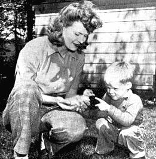

Carolyn and Jackie get a close-up of a new member of the "family" - a day-old gosling. He came out of the shell yesterday. Today he is able to shift for himself quite well. A setting hen hatched him. Four or five goose eggs can be hatched (in 28-35 days) under a hen while the poor goose goes on laying more eggs.